Análisis visual para maximizar tus capturas según las condiciones del mar.
| Condición | Color de Agua | Momento del Día | Colores Recomendados | Notas / Efecto Visual |
|---|---|---|---|---|
| ☀️ Día soleado | Agua clara | Pleno día |
 Verde
Verde
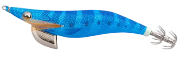 Azul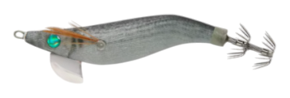 Plateado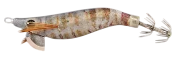 Natural |
Imitan presas reales; evitan el exceso de brillo en días soleados. |
| ☁️ Día nublado | Clara o ligeramente teñida | Mediodía / tarde |
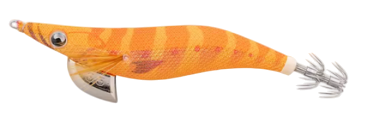 Naranja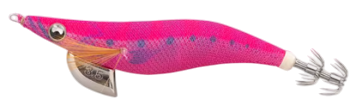 Rosa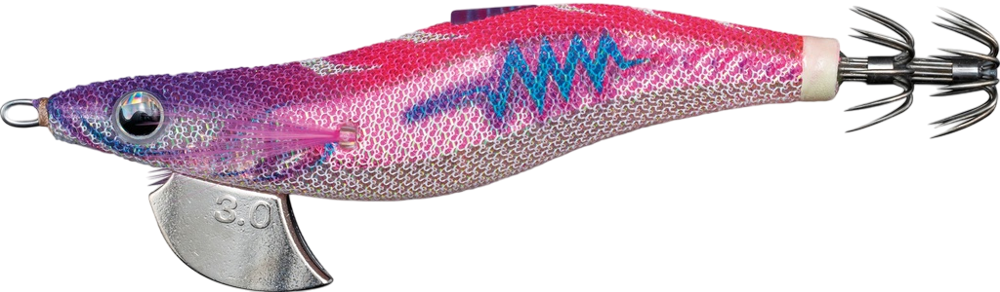 Violeta suave |
Los colores vivos destacan con menor luz solar. |
| 🌅 Amanecer / Atardecer | Agua clara | Baja luz |
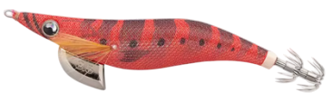 Rojo translúcido
Naranja
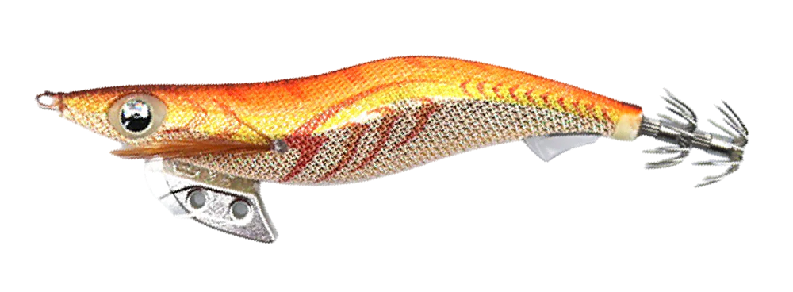 Dorado |
Reflejan tonos cálidos del entorno. |
| 🌙 Noche con luna | Agua clara | Noche |
Rojo translúcido
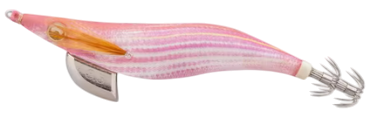 Rosa claro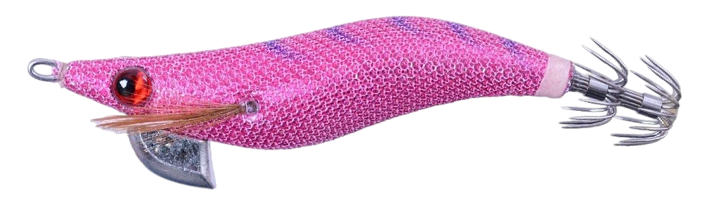 Violeta |
Simula bioluminiscencia suave. |
| 🌑 Noche sin luna | Agua oscura o turbia | Noche |
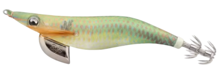 Glow verde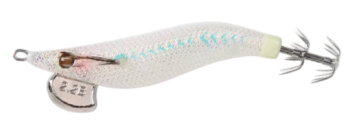 Glow blanco Glow naranja
Glow naranja
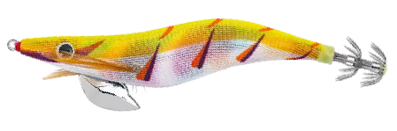 Glow amarillo |
Colores luminosos para máxima visibilidad. |
| 🌊 Agua muy turbia | Oscura o verdosa | Cualquier hora |
Glow amarillo
Glow naranja
|
Máximo contraste en aguas sucias. |
En Egis Low Cost analizamos cómo marcas de AliExpress como Letoyo o Kingdom replican los esquemas cromáticos de líderes como Yamashita. La clave no es el color que nos guste a nosotros, sino el contraste que genera el señuelo contra el cielo o el fondo marino para el ojo del cefalópodo.